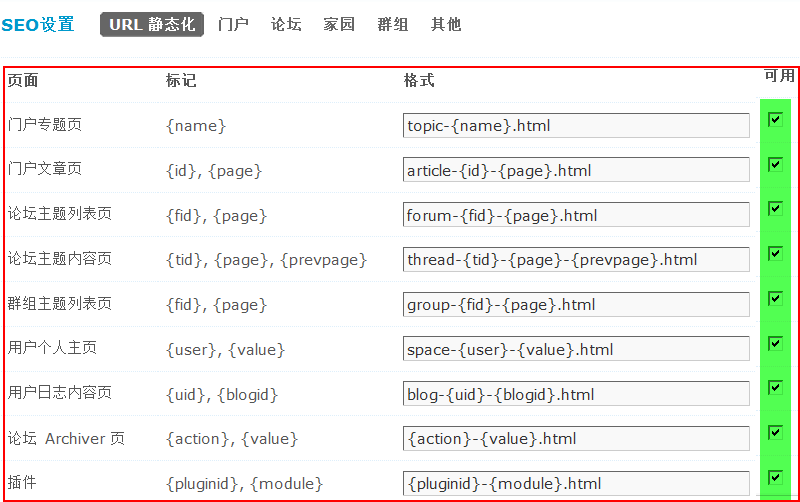
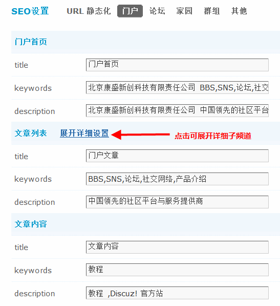
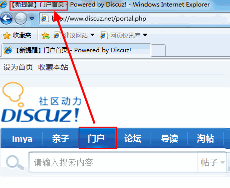
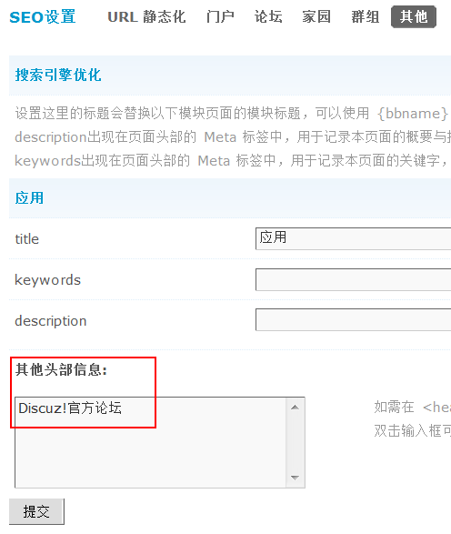

SEO设置
SEO设置包括对各页面标题的可自定义，门户各频道单独的 SEO 优化设置和论坛各版块的 SEO 优化设置以及家园、群组、应用等的SEO优化设置。 对站点进行搜索引擎优化设置一直是广大站长朋友比较关心和关注的问题之一，有些站点开始的时候搜索引擎蜘蛛的抓取量很大，排名比较靠前，但是后来发现站点内容不被收录或者收录的内容严重下降，这也是部分站长的疑问，还有一些站，内容很少被搜索引擎蜘蛛抓取，当然排名也很靠后，到各大搜索网站搜索自己的站点关键字，可能已经到了第二页甚至第三页或更靠后，而有些站输入站点关键字排名就比较靠前，被收录的页面也比较全面，这些都和站点本身 SEO 的优化有关。
一、搜索引擎优化
包括了开启 rewrite 以及站点各页面标题关键字的优化。
1、URL 静态化
URL 静态化可以提高搜索引擎抓取，开启本功能需要对 Web 服务器增加相应的 Rewrite 支持，且会轻微增加服务器负担，同时您还可以调整每个页面的静态格式，但不得删除其中的 “{xxx}” 标记。注意，修改静态格式后您需要修改服务器的 Rewrite 规则设置，同时 Discuz! X3 版本会根据您在后台设置的静态格式自动生成 Rewrite 规则，不需要自己来编写。
操作路径：【后台】=>【全局】=>【SEO设置】=>【URL 静态化】，把需要静态化的页面设置为可用。如下图所示：
门户专题页：默认的静态格式为 topic-{name}.html 即当您访问专题页面的时候，显示地址如：
[code]http://www.discuz.org/topic-food.html[/code]
门户文章页：默认的静态格式为 article-{id}-{page}.html 即当您访问门户文章时的 Rewrite 规则，显示地址如：
[code]http://www.discuz.org/article-5-1.html[/code]
论坛主题列表页：默认的静态格式为 forum-{fid}-{page}.html 即当您访问论坛某个版块的时候，显示地址如：
[code]http://www.discuz.org/forum-8-1.html[/code]
论坛主题内容页：默认的静态格式为：thread-{tid}-{page}-{prevpage}.html 即当您访问论坛某个帖子时，显示地址如：
[code]http://www.discuz.org/thread-27039-1-1.html[/code]
群组主题列表页：默认的静态格式为：group-{fid}-{page}.html 即当您访问某个群组的时候，显示地址如：
[code]http://www.discuz.org/group-1288-1.html[/code]
用户个人主页：默认的静态格式为：space-{user}-{value}.html 即当您访问某个用户的个人主页时的 Rewrite 规则。
用户日志内容页：默认的静态格式为：blog-{uid}-{blogid}.html 即当您访问某个用户的个人日志内容页时的 Rewrite 规则。
论坛 Archiver 页：默认的静态格式为：{action}-{value}.html 即当您访问论坛 Archiver 页时的 Rewrite 规则。
插件：默认的静态格式为：{pluginid}-{module}.html 即当您访问站点插件时的 Rewrite 规则。
在要生成 Rewrite 规则的页面后可用处打勾， 最后点击“查看当前的 Rewrite 规则”即可自己生成 Rewrite 规则。
分别生成了Apache Web Server(独立主机用户)、Apache Web Server(虚拟主机用户)、IIS Web Server(独立主机用户)、IIS7 Web Server(独立主机用户)、Zeus Web Server、Nginx Web Server。
然后在 Apache 服务器或者 IIS 下配置 URL 静态化的 Rewrite 规则，根据自己服务器的情况来选择相对应的 Rewrite 规则。
Rewrite 兼容性：如果你的服务器不支持 Rewrite 规则中的中文字符，请选择“是”。对于没有此问题的服务器，可以选择“否”。
2、在 Apache 服务器下配置 URL 静态化的 Rewrite 规则。
这里分两种情况，一种是独立主机用户，这部分用户拥有对主机的管理权限，因此配置起来比较方便一些。
首先确定您使用的 Apache 版本，及是否加载了 mod_Rewrite 模块。
Apache 1.x 的用户请检查 conf/httpd.conf 中是否存在如下两段代码： [code]LoadModule Rewrite_module libexec/mod_Rewrite.so AddModule mod_Rewrite.c [/code]
Apache 2.x 的用户请检查 conf/httpd.conf 中是否存在如下一段代码：
[code]LoadModule Rewrite_module modules/mod_Rewrite.so[/code]
如果存在，那么在配置文件（通常就是 conf/httpd.conf）中加入上面自动生成的 Apache Web Server（独立主机用户）Rewrite 规则代码。此时请务必注意，如果网站使用通过虚拟主机来定义，请务必加到虚拟主机配置中，如果加在虚拟主机配置外部将可能无法使用，改好后将 Apache 重启。
如果没有安装 mod_Rewrite，您可以重新编译 Apache，并在原有 configure 的内容中加入 –enable-Rewrite=shared，然后再在 Apache 配置文件中加入上述代码即可。
另外一种用户是 Apache 虚拟主机用户。
在开始以下设置之前，请首先咨询您的空间服务商，空间是否支持 Rewrite 以及是否支持对站点目录中 .htaccess 的文件解析，否则即便按照下面的方法设置好了，也无法使用。
检查 Discuz! 版本所在目录中是否存在 .htaccess 文件，如果不存在，请手工建立此文件。Win32 系统下，无法直接建立 .htaccess 文件，您可以从其他系统中拷贝一份，编辑并修改 .htaccess 文件，添加上面自动生成的 Apache Web Server（虚拟主机用户）Rewrite 规则代码。
添加内容时，请遵照上面的提示，修改 Discuz! 版本所在的路径，然后保存。将 .htaccess 文件上传到 Discuz! 版本所在的目录中。
Discuz! X3 版本还增加了仅对游客有效的设置，开启该项功能后，Rewrite 功能只对游客和搜索引擎有效，可减轻服务器负担。
其它相关教程参考：Discuz!系列教程-通过判断空间类型选择伪静态方式 http://www.discuz.net/thread-3191765-1-1.html
二、搜索引擎优化
网页标题通常是搜索引擎关注的重点，站点后台增加各页面标题的 seo 优化，这样可以更详细的设置每个频道的关键字。
这里包括了门户、论坛、群组、家园以及其他应用各频道的标题、SEO 描述以及SEO 关键字。
标题出现在页面头部的标题中，效果如下图所示：
设置这里的标题会替换以下模块页面的模块标题，可以使用 {bbname} 表示当前的站点名称。
点击导航栏上相应的频道即可在浏览器标题处显示在后台填写的标题内容，比如首页填的是“门户首页”那么在站点导航栏上点击门户就会出现上图所示的内容，其它如论坛、家园、群组、其它应用同理。
keywords 为SEO关键字 项出现在页面头部的 Meta 标签中，用于记录本页面的关键字，多个关键字间请用半角逗号 ”,” 隔开。
description 为SEO描述 出现在页面头部的 Meta 标签中，用于记录本页面的概要与描述。
其他头部信息：如需在 <head></head> 中添加其他的 HTML 代码，可以使用本设置，否则请留空。
在前台的显示效果：